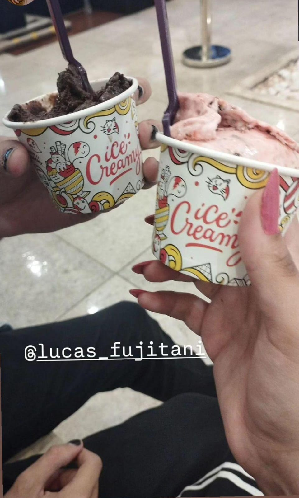

Destaques do Mês

"Sorvete do TikTok"
Fomos tomar sorvete pensando que seria igual do tiktok...

Mêsversário
Claro, a data mais importante do Mês!
Primeiro almoço com a sogra
Não tinha como fugir mais haha